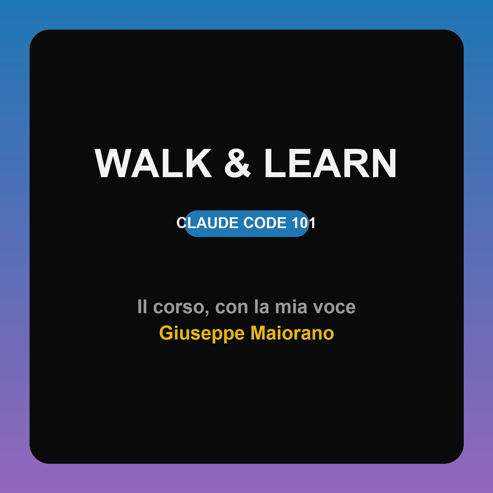

Claude Code 101 — letto con la mia voce. Impara camminando.
Copia questo indirizzo e in Apple Podcasts/Overcast/Pocket Casts scegli "Aggiungi programma via URL".
https://gmaiorano.github.io/walk-and-learn/podcast.xml
La velocità si regola nell'app podcast (1×–2×), il tono resta naturale. Le pause sono già nell'audio.